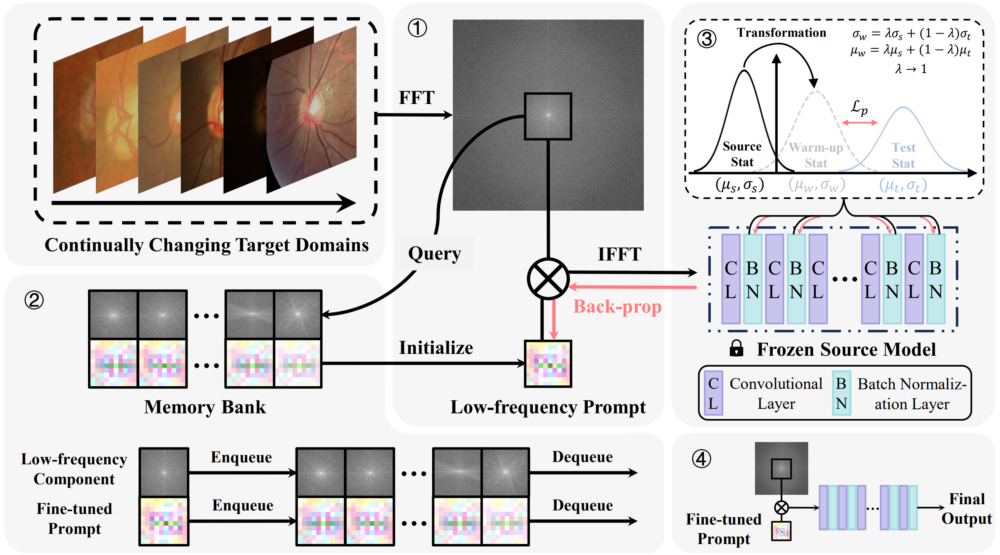
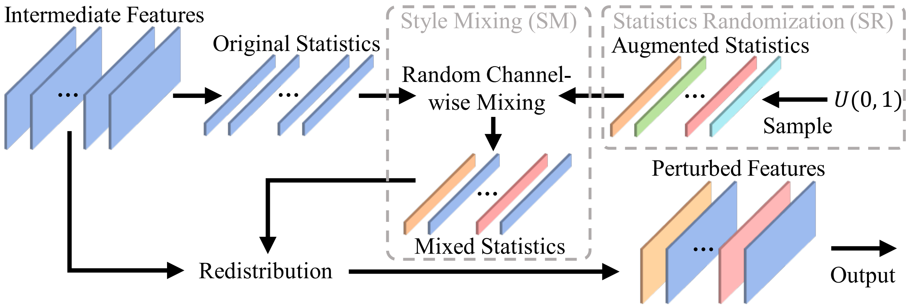
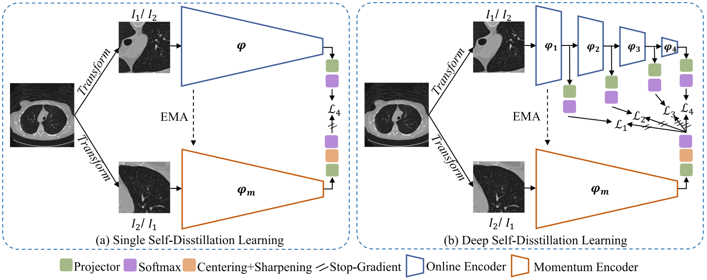

Ziyang Chen 陈梓杨Ph.D. CandidateAffiliation: School of Computer Science and Engineering, Northwestern Polytechnical UniversityCurrent Address: 1 Dongxiang Road, Chang'an District, Xi'an, Shaanxi, China Email: zychen@mail.nwpu.edu.cn Google Scholar • GitHub |
Biography
- Introduction
- Education Backgrounds
- 2023.03-Present • Ph.D. Candidate • Supervisor: Prof. Yong Xia.
- 2021.08-2023.03 • M.E. Candidate • Supervisor: Prof. Yong Xia.
- 2017.09-2021.06 • B.S. • Supervisor: Prof. Yong Xia.
-
I am a second-year Ph.D. student at National Engineering Laboratory for Integrated Aero-Space-Ground-Ocean Big Data Application Technology, School of Computer Science and Engineering, Northwestern Polytechnical University (NPU), China.
My research focuses on domain adaptation, domain generalization, self-supervised learning, and universal model.
News
- [2024.12.10] One paper was accepted by AAAI 2025.
- [2024.10.30] Our team won the honorable mention in the FLARE challenge task 1 at MICCAI 2024.
- [2024.10.30] Our team won the winner finalist in the FLARE challenge task 3 at MICCAI 2024.
- [2024.10.28] Our team won the 3rd place in the MMIS challenge at MICCAI 2024.
- [2024.09.30] Our team won the 2nd place in the STAGE2 challenge at MICCAI 2024.
- [2024.07.19] I was selected as a joint Ph.D. student supported by the China Scholarship Council (CSC).
- [2024.07.12] One joint paper was accepted by IEEE-TMI 2024.
- [2024.05.30] One paper was accepted by IEEE-JBHI 2024.
- [2024.02.27] One paper and one joint paper were accepted by CVPR 2024.
- [2023.10.12] Our team won the 2nd place in the SegRap challenge at MICCAI 2023.
- [2023.10.12] Our team won the 2nd place in the STAGE challenge at MICCAI 2023.
- [2023.05.25] One paper and one joint paper were early accepted by MICCAI 2023.
- [2023.04.11] One paper was accepted by IEEE-JBHI 2023.
- [2022.06.03] One joint paper was accepted by MICCAI 2022.
- [2021.09.21] One paper was accepted by MICCAI 2021 OMIA Workshop.
- [2021.06.30] I received the B.S. degree from Northwestern Polytechnical University, supervised by Prof. Yong Xia.
- [2019.08.31] Our team won the 2nd place in the 2019 China Robot Competition.
- [2019.05.06] Our team won the first prize in the 2nd National College Intelligent Robot Creative Competition.
Representative Publications
-
* and † indicate the corresponding authorship and equal contribution, respectively.
Domain Adaptation
| Ziyang Chen, Yiwen Ye, Yongsheng Pan*, and Yong Xia* Gradient Alignment Improves Test-Time Adaptation for Medical Image Segmentation AAAI, 2025. [Paper, Code] | |
|  | Ziyang Chen, Yongsheng Pan*, Yiwen Ye, Mengkang Lu, and Yong Xia* Each Test Image Deserves A Specific Prompt: Continual Test-Time Adaptation for 2D Medical Image Segmentation CVPR, pp. 11184-11193, 2024. [Paper, Code] |
| Ziyang Chen†, Yongsheng Pan†, Yiwen Ye, Zhiyong Wang, and Yong Xia* TriLA: Triple-level Align- ment based Unsupervised Domain Adaptation for Joint Segmentation of Optic Disc and Optic Cup IEEE-JBHI, vol. 28(9), pp. 5497-5508, 2024. [Paper, Code] | |
| Ziyang Chen†, Yongsheng Pan†, and Yong Xia* Reconstruction-Driven Dynamic Refinement Based Unsupervised Domain Adaptation for Joint Optic Disc and Cup Segmentation IEEE-JBHI, vol. 27(7), pp. 3537-3548, 2023. [Paper] |
Domain Generalization
|  | Ziyang Chen†, Yongsheng Pan†, Yiwen Ye, Hengfei Cui, and Yong Xia* Treasure in Distribution: A Domain Randomization based Multi-source Domain Generalization for 2D Medical Image Segmentation MICCAI, vol. 14223, pp. 89-99, 2023. [Paper, Code][Early Accept] |
Self-Supervised Learning
| Yiwen Ye†, Jianpeng Zhang†, Ziyang Chen, and Yong Xia* CADS: A Self-supervised Learner via Cross-modal Alignment and Deep Self-distillation for CT Volume Segmentation IEEE-TMI, 2024. [Paper, Code] | |
| Yiwen Ye, Yutong Xie*, Jianpeng Zhang, Ziyang Chen, Qi Wu, and Yong Xia* Continual Self-supervised Learning: Towards Universal Multi-modal Medical Data Representation Learning CVPR, pp. 11114-11124, 2024. [Paper, Code][Highlight] | |
|  | Yiwen Ye†, Jianpeng Zhang†, Ziyang Chen, and Yong Xia DeSD: Self-Supervised Learning with Deep Self-Distillation for 3D Medical Image Segmentation MICCAI, vol. 13434, pp. 545–555, 2022. [Paper, Code] |
Universal Model
| Yiwen Ye†, Yutong Xie†, Jianpeng Zhang, Ziyang Chen, and Yong Xia* UniSeg: A Prompt-Driven Universal Segmentation Model as Well as A Strong Representation Learner MICCAI 2023, vol. 14222, pp. 508–518, 2023. [Paper, Code][Early Accept] |
Awards and Honors
- 2025-2027 • Scholarship from China Scholarship Council (Joint Ph.D. Student)
- 2024 • NPU "Academic Star" (Top-10 in the School)
- 2024 • Honorable mention in the FLARE challenge Task 1 at MICCAI 2024
- 2024 • Winner finalist in the FLARE challenge Task 3 at MICCAI 2024
- 2024 • 3rd place in the MMIS challenge at MICCAI 2024
- 2024 • 2nd place in the STAGE2 challenge at MICCAI 2024
- 2023 • 2nd place in the SegRap challenge at MICCAI 2023
- 2023 • 2nd place in the STAGE challenge at MICCAI 2023
- 2022 • National Scholarship (Master Student)
- 2021 • NPU Excellent Undergraduate Award
- 2021 • NPU Excellent Undergraduate Thesis Award
- 2019 • 2nd place in the 2019 China Robot Competition
- 2019 • First prize in the 2nd National College Intelligent Robot Creative Competition
Reviews
- Conference Reviews
- MICCAI 2024
- Journal Reviews
- IEEE Transactions on Medical Imaging (TMI)
- IEEE Transactions on Neural Networks and Learning Systems (TNNLS)
- Knowledge-Based Systems (KBS)
Academic Activities
- 30 October 2024: MICCAI-FLARE Challenge, Virtual (Online Oral Presentation)
- 30 September 2024: MICCAI-STAGE2 Challenge, Virtual (Online Oral Presentation)
- 17-21 June 2024: CVPR 2024, Seattle, United States of America (Poster)
- 12 October 2023: MICCAI-STAGE Challenge, Virtual (Online Oral Presentation)
- 08-12 October 2023: MICCAI 2023, Vancouver, Canada (Poster)
- 27 September-01 October 2021: MICCAI 2021 OMIA Workshop, Strasbourg, France (Poster)